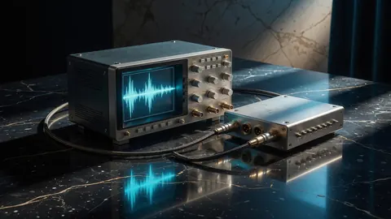
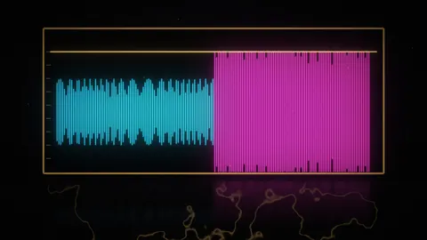
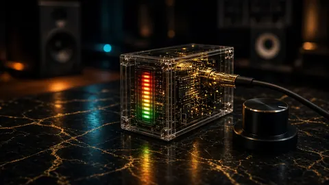
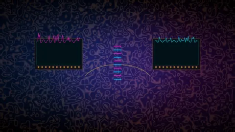
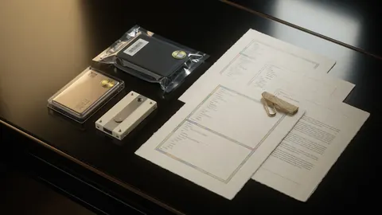
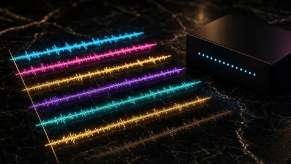

Lacquer · Topic · 15 essays
True peak, limiting & delivery
True peak is what the codec sees after it rebuilds your waveform. This path follows a master from the mix bus to the upload form.
True peak is what a codec sees after it rebuilds the waveform, not the sample peaks your DAW draws. A file whose samples stop just under 0 dBFS can still produce overs once it is encoded to AAC or Opus, which is why CoProducer’s delivery gate sits at −1.0 dBTP and why every lossy re-encode deserves a little extra margin.
This path follows a master from the mix bus to the upload form: how much headroom to leave for mastering, why you turn the mix down before the limiter, when a clipper or one more limiter is the wrong tool, and what sample rate and bit depth distributors actually want. It ends with the delivery paperwork: gapless album encoding, a release checklist that uses the same gates as the meter, how to read a CoProducer score, what a 70-to-90 repair really changes, and why the report ships as HTML, JSON and TXT.

Meters · 20 August 2026 · 7 minTrue peak is what codecs clip
True peak (dBTP) estimates inter-sample peaks. Streaming wants about −1.0 dBTP. A legal sample peak can still clip after AAC or Opus reconstruction.
- Codecs · 21 August 2026 · 7 min
Why does my master clip after MP3 or AAC?
A WAV peaking at −0.1 dBFS can clip once it’s encoded to AAC or MP3. Why it happens, how much true-peak headroom to leave, and a script to test it.

Delivery · 15 October 2026 · 8 minHow much headroom to leave for mastering (and why −6 dB isn’t the point)
Headroom for mastering means no clipping and no mix-bus limiter. Peaks near −6 to −3 dBFS in 24-bit or float is convention; clipping can’t be undone.

Mastering · 12 October 2026 · 8 minTurn the mix down before you limit
If the mix already hits 0 dBFS into the limiter, extra loudness is distortion you can’t take back. Pull the bus down 3–6 dB, then limit.
- Limiting · 21 August 2026 · 8 min
When not to reach for the limiter
Skip another limiter when clips are already non-zero, LUFS is only slightly hot, or the real problem is arrangement, noise, or a bad edit — not peak height.

Delivery · 6 October 2026 · 9 minClipper vs limiter for hip-hop delivery — loudness isn’t the only score
Soft clipper vs brickwall limiter on the same drive: compare LUFS, true peak, and crest. Sample peak −1.0 dBFS is not true-peak safe.
- Delivery · 21 August 2026 · 8 min
Sample rate and bit depth are delivery hygiene
CoProducer fails sample rates under 44.1 kHz. Why 32 kHz fails delivery, when 44.1/48/96 are fine, what bit depth distributors want, and how to verify the bounce.
- Delivery · 16 October 2026 · 7 min
Why your gapless album gets gaps after MP3 or AAC
MP3 and AAC encoders add silence at the start and padding at the end of every file. Why segues break, what we measured, and how to stay seamless.
- Checklist · 20 August 2026 · 6 min
A release checklist that matches the meter
Release checklist: −14 LUFS ±1.5, true peak ≤ −1.0 dBTP, 0 clipped samples, ≥44.1 kHz, phase ≥ 0.2, score ≥ 90. Same gates CoProducer scores.
- Mastering · 21 August 2026 · 7 min
Mastering .bat versus opening the session
A mastering .bat is for trusted delivery passes on finished mixes. Open the session when arrangement, bad edits, or clipped vocals need real surgery.
- Scoring · 21 August 2026 · 8 min
How to read a CoProducer score
A CoProducer score ≥ 90 means release-ready against the tool’s gates — not a Grammy. Read the findings: a 70 with 831 clips is a different emergency than a 77.
- Proof · 20 August 2026 · 9 min
What a 70-to-90 repair actually changes
Public A/B proofs: Crazy Stacy 70→90 (831 clips→0), BeatGoHard 77→95, Drippin 66→93. A delivery pass — not a remix or taste rewrite.

Reports · 21 August 2026 · 7 minWhat should a loudness report include? HTML, JSON, TXT
A loudness report should name the exact file, its hash, LUFS, true peak and LRA. Keep HTML for people, JSON for scripts and TXT for chat. Script included.

Delivery · 20 October 2026 · 8 minSending stems to a mixer? Export them so they line up and add back up
How to export stems for a mixing engineer: same start, same length, one sample rate, no mix-bus chain, and a null test against your rough before you send the link.
- Delivery · 23 October 2026 · 8 min
Making a clean version? Edit the vocals, keep the length, then check it against the explicit
How to make a clean version of a song: mute, reverse or replace the words on the vocal tracks, chase the reverb and delay tails, bounce through the same master at the same length, then compare it to the explicit. Script inside.
More topics: Loudness & LUFS Low end, 808s & mix dynamics 432 Hz, pitch & tempo Stem separation, sampling & privacy All essays